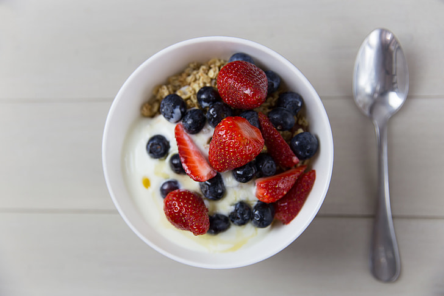

Yogurt

Description
Light and refreshing start to the day. Creamy yogurt topped with juicy
berries gives you a balance of protein, natural sweetness, and
antioxidants — the perfect breakfast to wake you up and fuel your morning.
Ingredients
- 3/4 cup Bulgarian Yogurt
- 1/2 cup of blueberries
- 1 cup chopped strawberries
- 1 tbsp honey
Steps
- Place 3/4 cup of yogurt in a bowl.
- Wash and slice your berries, place on top of the yogurt.
- Drizzle honey over top.
- Enjoy as an amazing breakfast!
Home